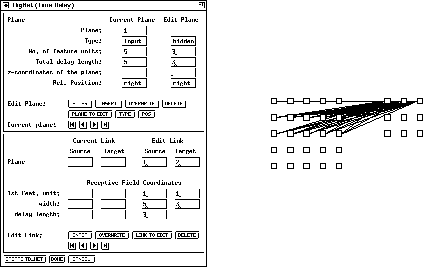
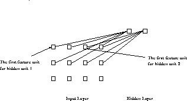

In the link panel the connections special to TDNNs can be defined. In
TDNNs links always lead from the receptive field in a source plane to
one or more units of a target plane. Note, that a receptive field
has to be specified only once for each plane and is automatically
applied to all possible delay steps in that plane.
figure  gives an example of a
receptive field specification and the network created thereby.
gives an example of a
receptive field specification and the network created thereby.


It is possible to specify seperate receptive fields for different
feature units. With only one receptive field for all feature units, a
"1" has to be specified in the input window for "1st feature unit:".
For a second receptive field, the first feature unit should be the
width of the first receptive field plus one. Of course, for all number
of receptive fields, the sum of their width has to equal the number of
feature units! An example network with two receptive fields is
depicted in figure